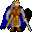

Throdna¶Where to find Throdna: Prim: Blackwater mountain 50
{ .sprite }
| Type | NPC (can be spoken to; cannot be attacked) |
| Role | Starts Lights in the dark |
| Found in | Prim |
| Entry ID | throdna |
| Introduced | v0.7.0 or earlier |
Quests¶
- Darkness in the Daylight: stages 100, 110
- Lights in the dark: stages 8, 9, 10, 11, 30, 40, 41, 100
Dialogue simulator¶
Set your quest stages and items, then talk to Throdna. Same rules as the game: same checks, same options, same effects.
Rules verified against v0.8.18 game code (ConversationController.java) and dialogue data.
Dialogue (71 lines)
Exactly as in the game files. Each line appears once; links jump to where a choice leads.
throdna_start (silent check: the first matching branch below is taken)
- branch 1 (if reached stage 90 of Darkness in the Daylight; NOT reached stage 100 of Darkness in the Daylight) → dds_throdna_10
- branch 2 (if reached stage 100 of Lights in the dark) → throdna_purify_4
- branch 3 (if reached stage 41 of Lights in the dark) → throdna_purify_1
- branch 4 (if reached stage 30 of Lights in the dark) → throdna_return_3
- branch 5 (if reached stage 10 of Lights in the dark) → throdna_return_1
- branch 6 → throdna_1
dds_throdna_10 Throdna: “You keep on disturbing us?”
- “How did you manage to lose this? [Gives Throdna the second piece of the Kazaul ritual]” → dds_throdna_20
throdna_purify_4 Throdna: “You should get out of here to allow us to concentrate on our work.”
- Next → throdna_purify_5
throdna_purify_1 Throdna: “Hello again. I hope you are here to tell me you have purified the shrine of Kazaul?”
- “Yes, it is done.” (if reached stage 60 of Lights in the dark) → throdna_purify_3
- “No, not yet.” → throdna_purify_2
- “What was I supposed to do again?” → throdna_return_8
throdna_return_3 Throdna: “You actually found all five pieces? I suppose I should thank you. Well then. Thank you.” — effects: sets stage 30 of Lights in the dark
- Next → throdna_return_4
throdna_return_1 Throdna: “Hello again. I hope you come here to tell me you have the five parts of the ritual.”
- “I am still looking for them.” → throdna_return_2
- “How many parts was I supposed to find?” → throdna_15
- “What was I supposed to do again?” → throdna_12
- “Yes, I think I have found them all.” (if reached stage 21 of Lights in the dark) → throdna_check_1
throdna_1 Throdna: “Kazaul ... Shadow ... what was it again?”
- Next → throdna_2
dds_throdna_20 Throdna: “Why did you steal this? You must be part of that terrible cult of the Kazaul.”
- Next → dds_throdna_22
throdna_purify_5 Throdna: “...Kazaul, destroyer of bright dreams...”
- Next → throdna_purify_6
throdna_purify_3 Throdna: “Good. We must hurry to continue our research on Kazaul.” — effects: sets stage 100 of Lights in the dark
- Next → throdna_purify_4
throdna_purify_2 Throdna: “Then hurry and go take the vial to the shrine! What are you standing around here for?”
throdna_return_8 Throdna: “We need you to do two things. First, you must find the shrine of Kazaul. Our scouts tell us that the shrine should be located somewhere near the base of Blackwater mountain.”
- Next → throdna_return_9
throdna_return_4 Throdna: “We have more pressing matters to focus on. As I briefly mentioned before, we believe that Kazaul will manifest in our presence soon.”
- Next → throdna_return_5
throdna_return_2 Throdna: “Then hurry and go find them! What are you standing around here for then?”
throdna_15 Throdna: “According to our sources, there should be five parts of the ritual scattered across the mountain. Three of them describing the ritual itself, and two describing the Kazaul chant used to summon the guardian.”
- Next → throdna_15_1
throdna_12 Throdna: “As I said, we want to learn more about the ritual itself.” — effects: sets stage 9 of Lights in the dark
- Next → throdna_13
throdna_check_1 (silent check: the first matching branch below is taken)
- branch 1 (if reached stage 22 of Lights in the dark) → throdna_check_2
- branch 2 → throdna_check_fail
throdna_2 Throdna: “Oh, a visitor. Hello there. I have not seen you around here before. Did they let you in here?”
- Next → throdna_3
dds_throdna_22 Throdna: “Where was I? Ah, yes ...”
- Next → dds_throdna_22a
throdna_purify_6 Throdna: “...Kazaul ... Shadow...”
- Next → throdna_purify_7
throdna_return_9 Throdna: “However, all passageways to the shrine are 'clouded in Shadow' according to our scouts. I'm not sure what that means.”
- Next → throdna_return_10
throdna_return_5 Throdna: “If that were to happen, we could not complete our research about the ritual or Kazaul itself, all our efforts would be lost.”
- Next → throdna_return_6
throdna_15_1 (silent check: the first matching branch below is taken)
- branch 1 (if reached stage 10 of Lights in the dark) → conversation ends
- branch 2 → throdna_16
throdna_13 Throdna: “A while ago, we were on the verge of getting our hands on the whole ritual itself, but the messenger was killed under most interesting circumstances while traveling up here.”
- Next → throdna_14
throdna_check_2 (silent check: the first matching branch below is taken)
- branch 1 (if reached stage 25 of Lights in the dark) → throdna_check_3
- branch 2 → throdna_check_fail
throdna_check_fail Throdna: “It seems you have not found all five pieces yet.”
- Next → throdna_15
throdna_3 Throdna: “Of course they did. What am I rambling on about. Harlenn and his gang always keep their worldly duties under control.”
- Next → throdna_4
dds_throdna_22a Throdna: “O Kazaul, venerabilis deus, where art thou in the shadows of tempus ...”
- Next → dds_throdna_22b
throdna_purify_7 Throdna: “[Throdna continues to mumble on about Kazaul, but you cannot make out any other words]”
throdna_return_10 Throdna: “Second, we need you to take a vial of purifying spirit and apply it to the shrine.” — effects: sets stage 40 of Lights in the dark
- Next → throdna_return_11_select
throdna_return_6 Throdna: “Therefore, we intend to delay the process as much as we can, until we have learned of its powers.”
- Next → throdna_return_7
throdna_16 Throdna: “Hmm, maybe you could be of use here...”
- “I would be glad to help.” → throdna_18
- “Sounds dangerous, but I'll do it.” → throdna_18
- “Keep your ritual of the Shadow to yourself. I am not getting involved in this.” → throdna_17
throdna_14 Throdna: “We knew he had the parts of the complete ritual on him, but since he was killed and we could not get to him because of the monsters - his notes were lost to us.”
- Next → throdna_15
throdna_check_3 (silent check: the first matching branch below is taken)
- branch 1 (if reached stage 26 of Lights in the dark) → throdna_check_4
- branch 2 → throdna_check_fail
throdna_4 Throdna: “So, who might you be then, eh? Probably here to bother me with some worldly complaint about the settlement needing more resources or someone complaining about the cold drag from the outside again?”
- Next → throdna_loop_1
dds_throdna_22b Throdna: “... Sacra ritus, anciente, must be reawakened, sed obscure ...”
- Next → dds_throdna_22c
throdna_return_11_select (silent check: the first matching branch below is taken)
- branch 1 (if reached stage 41 of Lights in the dark) → throdna_return_13
- branch 2 → throdna_return_11
throdna_return_7 Throdna: “You might be useful to us here again.”
- “I'm ready for anything.” → throdna_return_8
- “What do you need of me?” → throdna_return_8
- “I sure hope it involves more killing and looting.” → throdna_return_8
throdna_18 Throdna: “Yes, you might be able to help. Not that you really have any choice though.”
- Next → throdna_19
throdna_17 Throdna: “Fine, we will just have to find someone else then.”
throdna_check_4 (silent check: the first matching branch below is taken)
- branch 1 (if reached stage 27 of Lights in the dark) → throdna_return_3
- branch 2 → throdna_check_fail
throdna_loop_1 Throdna: “What do you want?”
- “What is this place?” → throdna_6
- “Who are you?” → throdna_7
- “What was that you talked about when I arrived, Kazaul?” → throdna_8
- “Are you aware that there is a bitter rivalry going on between this settlement and Prim?” → throdna_5
dds_throdna_22c Throdna: “... Lumen in tenebris, the sigil of Kazaul, lost in the mists of memoria ...”
- Next → dds_throdna_24
throdna_return_13 Throdna: “Return to me as soon as you have completed your task.”
throdna_return_11 Throdna: “This vial is a vial of purifying spirit. It should delay the process well enough for us to be able to continue our research.”
- “Sounds easy. I'll do it.” → throdna_return_12
- “Sounds dangerous, but I will do it.” → throdna_return_12
- “This sounds like a trap. I won't agree to do your dirty work.” → throdna_17
throdna_19 Throdna: “OK. Find me the pieces of the ritual that the former messenger carried on him. They should be found somewhere on the path up to Blackwater mountain.” — effects: sets stage 10 of Lights in the dark
- “I will return with your parts of the ritual.” → throdna_20
throdna_6 Throdna: “This is the mages' chamber in Blackwater mountain. We devote our time to the studies of the Shadow and its descendants.”
- “Descendants?” → throdna_8
- “Let's go back to my other questions.” → throdna_loop_1
throdna_7 Throdna: “I am Throdna. One of the most learned persons around, if you ask me.”
- Next → throdna_loop_1
throdna_8 Throdna: “Kazaul, the Shadow spawn of red marrow.” — effects: sets stage 8 of Lights in the dark
- Next → throdna_9
throdna_5 Throdna: “And there you go with your mundane problems. I tell you, your worldly troubles do not interest me the least bit.”
- Next → throdna_6
dds_throdna_24 Throdna: “... Perhaps the incantatio of the ancients holds the key, sed forgotten ...”
- “What was the word again? Ah, I remember. [Loud voice] Kazaul Est!” → dds_throdna_30
throdna_return_12 Throdna: “Good, here is the vial. Now hurry.” — effects: sets stage 41 of Lights in the dark, gives Vial of purifying spirit
- Next → throdna_return_13
throdna_20 Throdna: “Yes, you will.” — effects: sets stage 11 of Lights in the dark
throdna_9 Throdna: “We have been trying to read all we can on Kazaul, and the ritual. It seems we might be too late.”
- “What do you mean?” → throdna_10
dds_throdna_30 Throdna: “You are still here? Well ...”
- Next → dds_throdna_32
throdna_10 Throdna: “The ritual. We believe that Kazaul will manifest in our presence soon.”
- Next → throdna_11
dds_throdna_32 Throdna: “So, you're not the one who stole my notes?”
- “No, in fact I helped purify the shrine.” → dds_throdna_40
throdna_11 Throdna: “We must learn more about the Kazaul ritual, to gain its power and learn to use it for our purposes.”
- “Can I help in some way?” → throdna_12
- “What were you planning to do?” → throdna_12
dds_throdna_40 Throdna: “That is right. So, what do you want?”
- “I need to know what all this chant can do.” → dds_throdna_50
dds_throdna_50 Throdna: “It's a powerful chant for many dangerous things. I'm not sure I should tell. Followers of Kazaul want to get a foothold in Dhayavar.”
- Next → dds_throdna_52
dds_throdna_52 Throdna: “The ritual of the nocturnus, should it be performed under Luna's watchful eye ...”
- Next → dds_throdna_54
dds_throdna_54 Throdna: “... Ego dubito, whether the offerings still hold power, or are but relics of a bygone era ...”
- “Not again - Kazaul Est!” → dds_throdna_60
dds_throdna_60 Throdna: “Yes. This piece of the ritual is of Kazaul. Along with the first part, one can raise Kazaul monsters, use in sacrifices, make defensive walls, impenetrable barriers ... dangerous rites.” — effects: sets stage 100 of Darkness in the Daylight
- “I just came from such an impenetrable barrier in the south of Stoutford.” → dds_throdna_70
dds_throdna_70 Throdna: “An impenetrable barrier? That's no good. If Kazaul gains a foothold in Dhayavar, strong monsters will roam in Dhayavar.”
- Next → dds_throdna_72
dds_throdna_72 Throdna: “... Is the tempus ripe for the reawakening of Kazaul, or is it but an illusion ...”
- Next → dds_throdna_74
dds_throdna_74 Throdna: “... Must find the correct verba, the sacred words that summon the divine ...”
- Next → dds_throdna_78
dds_throdna_78 Throdna: “... Kazaul's essence, hidden within the arcana of the old scrolls, waiting to be uncovered ...”
- “Kazaul Est!!” → dds_throdna_80
dds_throdna_80 Throdna: “Eh, yes. The barrier. One has to use the two pieces of the ritual and a chant of passage to go through the barrier.”
- “What is the chant of passage?” → dds_throdna_90
dds_throdna_90 Throdna: “That is something I do not know.”
- “So, nothing to be done?” → dds_throdna_100
dds_throdna_100 Throdna: “I didn't say that! There was a traveler a long time back - he wrote a book Calomyran Secrets. It has the chant of passage, among other things to counter Kazaul dangers. Find it, if you can.” — effects: sets stage 110 of Darkness in the Daylight
- “Calomyran Secrets? That rings a bell. Thanks!” → dds_throdna_102
dds_throdna_102 Throdna: “... Ah, the anciente scriptura, perhaps it reveals the secret to rekindling the divine ...”
Version history¶
| Version | Change |
|---|---|
| v0.7.0 | Present in v0.7.0 (earliest release tracked) |
| v0.7.2 | Dialogue: 17 lines changed · text: “Hm, maybe you could be of use here..” → “Hmm, maybe you could be of use here...” · text: “We need you to do two things. First, you must find the shrine of Kaza…” → “We need you to do two things. First, you must find the shrine of Kaza…” |
| v0.8.14 | Dialogue: 22 lines added, 1 line changed |
Verified against v0.8.18 and every earlier release back to v0.7.0 (game data compared release by release).
Technical information
| Entry ID | throdna |
| Spawn group | throdna |
| Loot table | – |
| Conversation | throdna_start |
| Faction | – |
| Movement | – |
| Icon | monsters_men2:4 |
| Defined in | res/raw/monsterlist_v069_npcs.json |
Raw data:
{
"id": "throdna",
"name": "Throdna",
"iconID": "monsters_men2:4",
"monsterClass": "humanoid",
"spawnGroup": "throdna",
"phraseID": "throdna_start"
}
Community notes¶
Written by players, not generated from game data. Observations: what players notice in-game · Lore: the in-world story · Trivia: real-world facts, references, development history · Theory / speculation: unconfirmed ideas; may just be unfinished content
Observations¶
No notes yet. Contributions are welcome: add a note.
Lore¶
No notes yet. Contributions are welcome: add a note.
Trivia¶
No notes yet. Contributions are welcome: add a note.
Theory / speculation¶
No notes yet. Contributions are welcome: add a note.
Data from v0.8.18